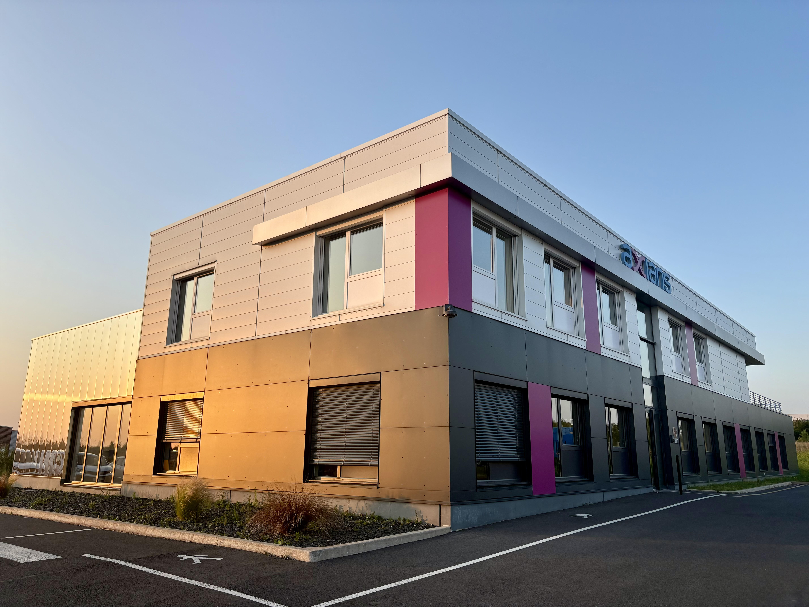

À propos de moi
20 ans, 3 ans d'expériences professionnelle.Curieux, Investi, Sens du service, Polyvalent, Bon relationnel et Autonome

Apprentissage chez AXIANS Arras
Je suis actuellement en apprentissage chez AXIANS C&S Arras-Lille
en tant qu'Administrateur Systèmes et Réseaux.
J'assure, au sein du MSP (Manages Services Provider), le service client de niveau 1.
Je suis ammené à me déplacer chez de nombreux clients pour effectuer des déploiements, remplacements d'équipements mais aussi diagnostiquer en cas d'incidents réseau.
Voici divers projets auquels j'ai participé :
- Campagne de mise à jour sur un environnement Meraki : recette avant mise à jour, déploiement conformément à la plage de planification, recette après mise à jour et tests de fonctionnement.
- Bascule des flux réseaux utilisateurs du lien WAN principal vers le lien secondaire pour alléger le réseau sur site.
- Intégration d'un nouveau switch de distribution dans un environnement en production.
L'informatique
L'informatique est une passion depuis l'âge de 13 ans. Je souhaitais avoir un PC gamer pour pouvoir jouer à mes jeux préférés.
Mes parents m'en ont alors offert un. C'est en le modifiant au fur et à mesure des mois que j'ai développé ma passion pour l'informatique.
J'ai commencé par faire des stages dans des boutiques locales, puis à la sortie du BAC, j'ai entammé la formation GMSI en alternance chez Cyber Planet.
Aujourd'hui je travaille chez AXIANS Arras et je développe mes compétences en systèmes et réseaux.
J'ai pour ambition, à la fin de la formation SRCC (Systèmes, Réseaux et Cloud Computing), de me faire embaucher pour travailler davantage ces compétence.
J'aimerai passer des certifications comme CCSP, CCNP, CSNA...

Mes compétences
📢Passionné d’informatique et des problématiques nécessitant réflexion et analyse, j’aime explorer et manipuler les différents outils et solutions permettant de répondre à ces défis.🎓 Lors de ma formation GMSI au CESI d’Arras, en alternance chez Cyber Planet, j’ai développé une solide connaissance de l’environnement Windows ainsi qu’une bonne maîtrise du diagnostic et de la résolution d’incidents sur les postes de travail. Cette expérience m’a également permis d’acquérir des compétences en sécurisation, optimisation et centralisation d’un parc informatique. ✅
💼 Par la suite, au sein d’Axians Arras, dans le cadre de ma formation ASR, j’ai eu l’opportunité de travailler sur des infrastructures réseaux et systèmes de grande envergure, renforçant ainsi mes compétences techniques dans des environnements critiques. 🌐⚙️
🚀 Bientôt, je poursuivrai mon parcours en intégrant la formation SRCC (bac+5) à l’ESGI de Lille, toujours en alternance chez Axians, afin d’élargir mes expertises et de relever de nouveaux défis dans l’administration, la sécurisation et la performance des infrastructures.
Curieux, rigoureux et doté d’un bon sens relationnel, je continue de construire un parcours où apprentissage académique et expérience professionnelle se complètent et s’enrichissent mutuellement. ✨ 🎯.
Réseau
- Administration de switch de routeurs et de firewalls.
- Layer 4 : Stormshield, Fortinet, PaloAlto, Meraki, VPN IPSec/SSL, IPS/IDS.
- Layer 3 : OSPF, BGP, EIGRP, HSRP, Routage intervlans.
- Layer 2 : STP(Spanning tree), VLANS.
Système
- ILO HPE
- iDRAC DELL
- VMware
- Linux
Gestion de stockage
- VEEAM
- Synology
- Rubrik
- Quantum
Comportementales
- Serveur Radius, ADCS.
- 802.1x, ACL.
Mes etudes / experiences pro
Voici mon parcours avec les différentes études et expériences professionelles que j'ai effectué.Lycée Gambetta Carnot Arras
Ecole d'ingénieurs - 2022-2025CESI Arras
BAC Général Spécialités Mathématiques et Physique Chimie - 2022ESGI Lille
La grande école d'informatique en alternance - 2025-2027IRIS Informatique
Permier mois d'apprentissage effectué dans cette entreprise pendant la formation GMSI au CESI Arras - Technicien informatique - Août 2022Cyber Planet
Apprentissage effectué dans cette entreprise pendant la formation GMSI au CESI Arras - Technicien informatique - 2022-2024AXIANS C&S Arras-Lille
Apprentissage effectué dans cette entreprise pendant la formation ASR au CESI Arras - Administrateur système et réseau - 2024-2025Inscrit pour la formation SRCC à l'ESGI de Lille toujorus au sein d'AXIANS Arras - Jusqu'en septembre 2027
Contact
Voici un lien vers mon cv que vous pourrez télécharger en pdf en bas de page : CV EVERAËRE Lucas
Si mon profil vous intéresse contactez moi ci-dessous :